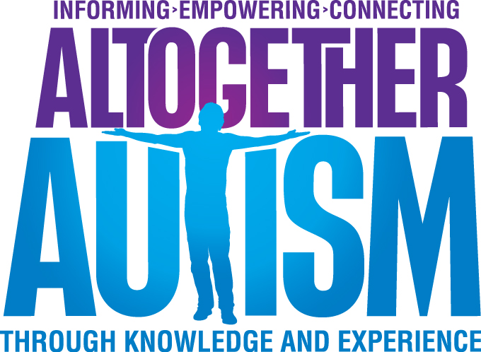

Our Partners
Our expert partners are passionate about educating people who work with children and young people and are ambassadors in child protection, behaviour guidance and child health and safety.
Our partner programme is designed to attract the most skilled training organisations, professionals and educators who have direct contact with a wide range of organisations and individuals who work with children and young people. If you’re interested in becoming a Safe for Children partner, contact us today.
Tracey RountreeADHD New ZealandTracey has been working with ADHD NZ to help them fulfill their mission to educate, support and advocate for those affected by ADHD. She has been presenting the Everyday with ADHD programme for over 8 years, facilitating parent courses and professional workshops around Auckland. As well as presenting current facts and information on ADHD through this programme, she has lived experience of ADHD and can bring that all important personal perspective to our Safe for Children presentations. |
|

Amanda PhillipsAltogether AutismAmanda Phillips works for Altogether Autism and is one of the founding facilitators for PRISM Professional Development Series. Amanda has worked with people on the autism spectrum for over 12 years in England, New York and New Zealand. Through working in schools and the community, Amanda has experience working in many settings and across all ages. Amanda currently manages PRISM Sales and Delivery for Altogether Autism and is passionate about building knowledge and awareness about autism in the community and ensuring professionals leave training workshops with simple strategies that can be implemented immediately to create more supportive environments for people with autism. |
|
Lynne HansenAltogether Autism
Lynne joined Altogether Autism in 2014. She has extensive experience presenting to groups such as the NZSTA,
MOE, MSD and schools. She has also contributed to various educational panels around inclusive education. |
|
James LeaDrowning Prevention AucklandJames is Operations Manager for Drowning Prevention Auckland, a not-for-profit organisation providing essential water safety services for Aucklanders. James has spent much of his life in and around water, as a keen surfer and qualified senior lifeguard. He has been involved with Surf Life Saving for 17 years, is a call out member for Bethells Beach Surf Life Saving Club, and support services team member for Surf Life Saving Northern Region, for whom he has also been a regional lifeguard supervisor and west coast supervisor. James has extensive knowledge and experience around risk management and rescue techniques, along with emergency care training, gained through his role as Training Manager for First Training and the provision of water safety for events and film shoots for NZ Lifeguards and, Lifeguard and Safety. James is highly motivated to reducing drowning through education with Safe for Children. |
Contact Us
 0800 SAFE4KIDS
0800 SAFE4KIDS
(0800 723 3454)
PO Box 99762, Newmarket, Auckland 1149
✉ admin@safeforchildren.co.nz